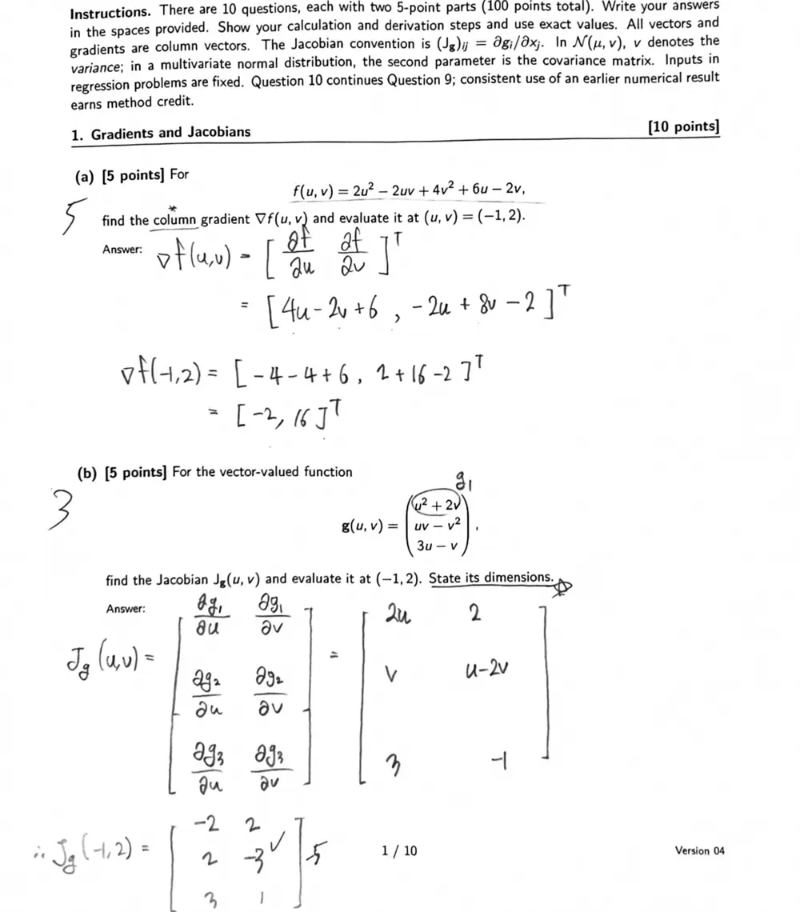
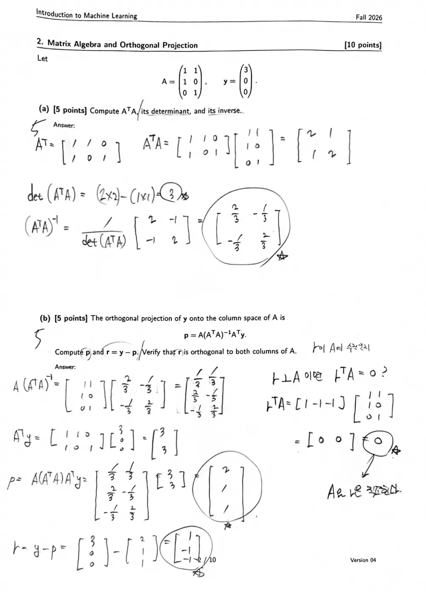
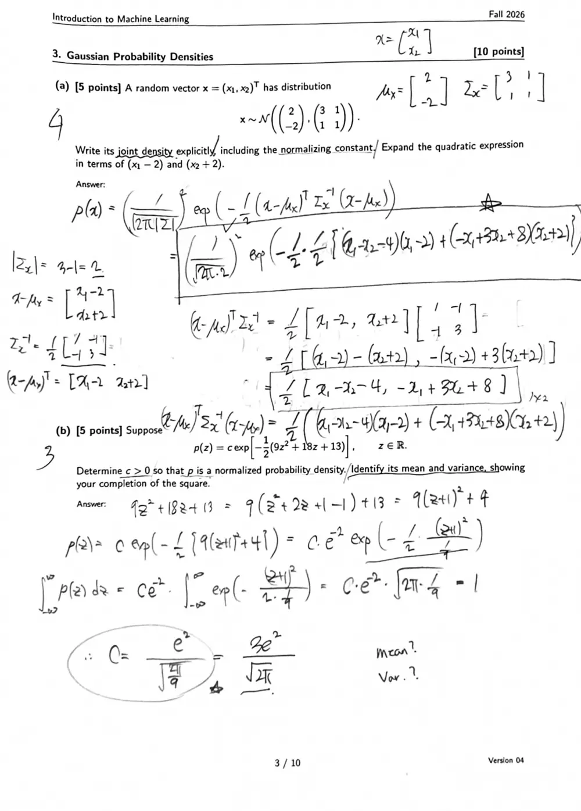
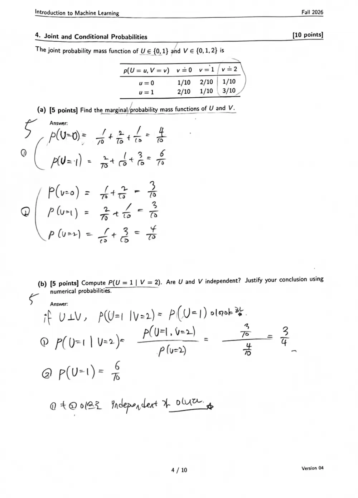
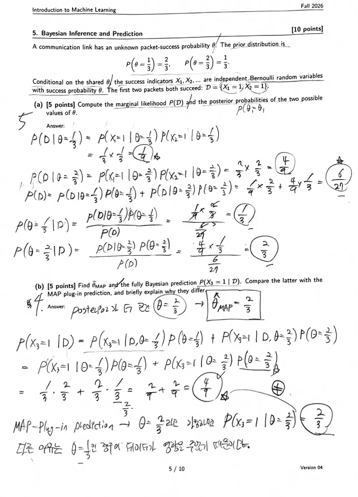
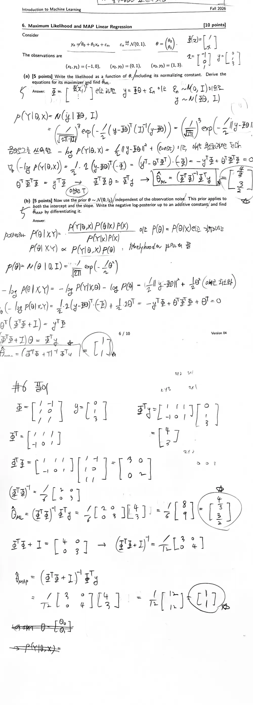
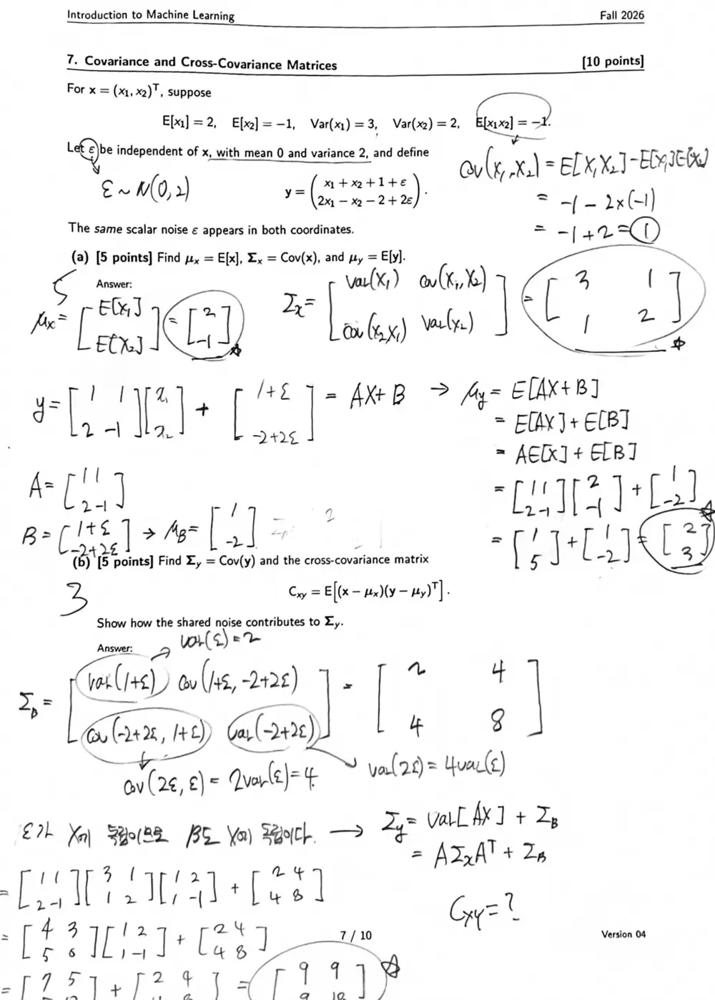
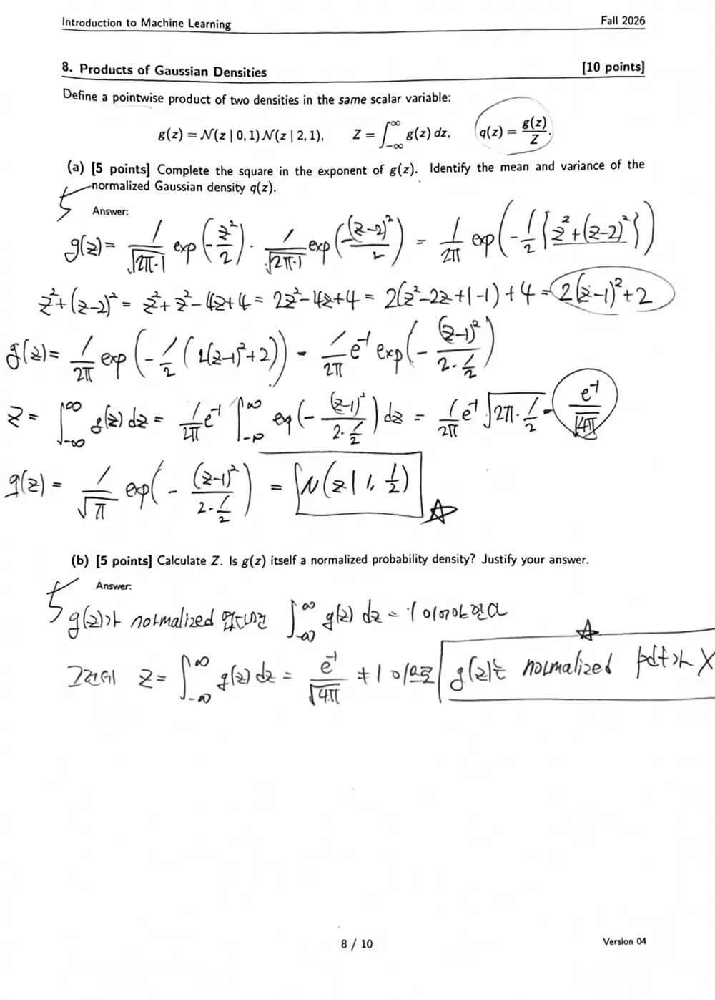
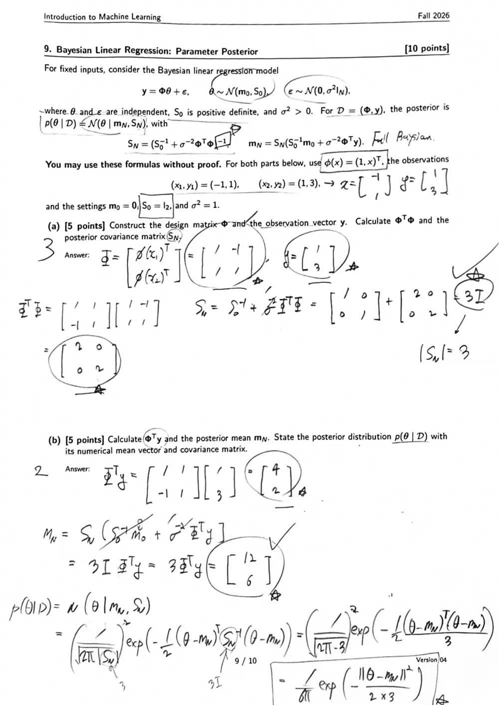
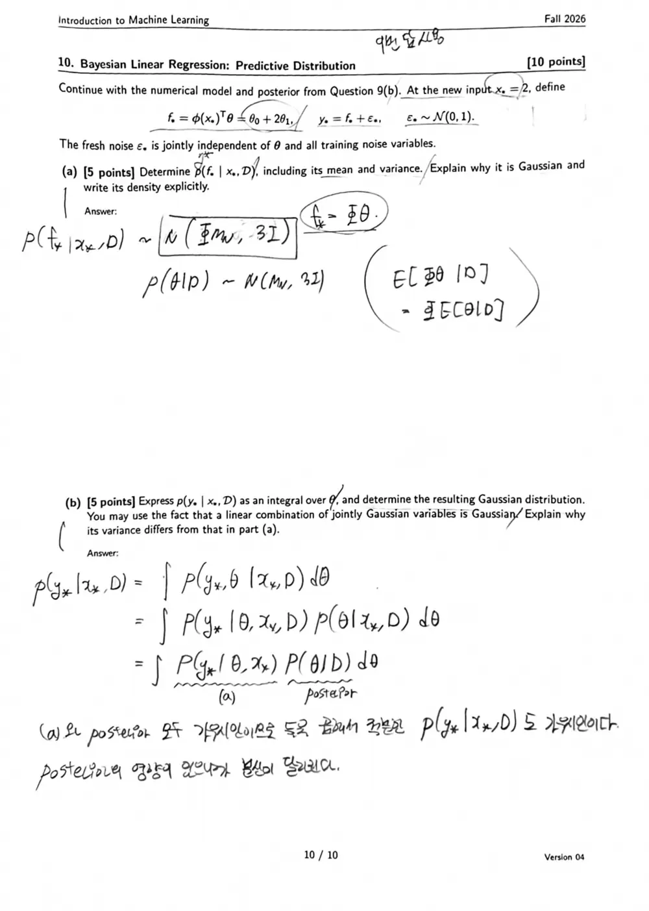

Q1. 기울기와 야코비안
Midterm 1021 Q1 · 원 문제 보기
원문 보기
" (a) For $f(u,v)=2u^2-2uv+4v^2+6u-2v$, find the column gradient $\nabla f(u,v)$ and evaluate it at $(u,v)=(-1,2)$.
(b) For the vector-valued function $\mathbf g(u,v)=\begin{pmatrix}u^2+2v\\ uv-v^2\\ 3u-v\end{pmatrix}$, find the Jacobian $\mathbf J_{\mathbf g}(u,v)$ and evaluate it at $(-1,2)$. State its dimensions.
"
무엇을 구하는 문제인가요?
(a)는 스칼라 함수 $f(u,v)$를 두 변수로 각각 미분해 열벡터로 세우고, $(-1,2)$에서 값을 구해요. (b)는 출력이 3개인 벡터함수 $\mathbf g$의 편미분 6개를 표로 배치한 야코비안(Jacobian)과 그 크기를 구해요.
이 시험은 지시문에서 "All vectors and gradients are column vectors"라고 열 관례를 정했어요. 강의 정리노트는 스칼라 미분을 행벡터(편미분을 가로로 모은 것)로 쓰지만, 이 문항은 원문 조건대로 열벡터로 답해요. 두 표기는 전치 관계 $\nabla f=(\partial f/\partial(u,v))^\top$일 뿐 값은 같아요.
이 부분을 조심해요
대입 단계의 부호 실수가 가장 흔해요. $u-2v$에 $u=-1,v=2$를 넣으면 $-1-4=-5$이고, 상수 성분 $-1$은 대입해도 그대로 $-1$이에요. 일반형을 맞게 써 놓고 숫자를 옮겨 적을 때 틀리기 쉬우니 성분마다 다시 확인해요.
"State its dimensions" 같은 짧은 요구를 빠뜨리지 않아요. 계산이 다 맞아도 요구 항목이 없으면 감점돼요. 야코비안을 입력×출력 $2\times3$으로 뒤집어 쓰지 않는 것도 확인해요.
채점 기준 (1109 해설 시간): 시험지가 "모든 벡터는 열벡터"이고 gradient도 열벡터라고 명시했으니 (a)의 gradient는 세로로 써요. 조교는 벡터 답을 가로로 쓴 경우 1점 정도 감점했다고 했어요. (b)는 차원 $3\times2$(3행 2열)를 꼭 써야 했어요. $\mathbb R^{3\times2}$ 기호는 없어도 돼요.
혼자 다시 풀어봐요
- 지시문의 $(\mathbf J_{\mathbf g})_{ij}=\partial g_i/\partial x_j$를 보고 행·열이 무엇인지 말해요.
- $\mathbf J_{\mathbf g}(u,v)$를 쓰고 $(-1,2)$를 성분마다 대입한 뒤 한 번 더 대입해 확인해요.
- 답 끝에 크기 $3\times2$를 적었는지 문제 문장과 대조해요.
떠올릴 개념·공식
이 시험은 열 gradient $\nabla f=(\partial f/\partial u,\partial f/\partial v)^\top$를 써요(강의의 행 표기의 전치). 야코비안은 $(\mathbf J_{\mathbf g})_{ij}=\partial g_i/\partial x_j$, 출력×입력 $3\times2$예요.
첫 줄
(a) $\partial f/\partial u=4u-2v+6$ (b) 1행 $(2u,\ 2)$부터 채워요.
핵심 주의점
$u-2v$에 대입하면 $-5$, 상수 $-1$은 그대로예요. "State its dimensions"를 답에 써요. 벡터 답은 세로로 써요.
답
(a) $(-2,16)^\top$ (b) $\begin{bmatrix}-2&2\\2&-5\\3&-1\end{bmatrix}$, $3\times2$
용어
- 편미분(partial derivative)
- 다른 변수는 상수로 두고 한 변수로만 미분한 값이에요.
- 열 gradient(column gradient)
- 스칼라 함수의 편미분을 세로로 쌓은 $d\times1$ 벡터예요. 이 시험의 지정 관례예요.
- 야코비안(Jacobian)
- 벡터함수 $\mathbf g:\mathbb R^d\to\mathbb R^m$의 편미분 표 $(\mathbf J_{\mathbf g})_{ij}=\partial g_i/\partial x_j$, 크기 $m\times d$예요.
Q2. 행렬 연산과 직교 사영
Midterm 1021 Q2 · 원 문제 보기
원문 보기
"Let $A=\begin{pmatrix}1&1\\1&0\\0&1\end{pmatrix}$, $\mathbf y=\begin{pmatrix}3\\0\\0\end{pmatrix}$. (a) Compute $A^\top A$, its determinant, and its inverse.
(b) The orthogonal projection of $\mathbf y$ onto the column space of $A$ is $\mathbf p=A(A^\top A)^{-1}A^\top\mathbf y$. Compute $\mathbf p$ and $\mathbf r=\mathbf y-\mathbf p$. Verify that $\mathbf r$ is orthogonal to both columns of $A$.
"
무엇을 구하는 문제인가요?
$A$는 $3\times2$, $\mathbf y$는 3차원 벡터예요. (a)는 $2\times2$ 행렬 $A^\top A$와 그 행렬식·역행렬을 구해요. (b)는 $\mathbf y$를 $A$의 두 열이 만드는 평면(열공간)에 수직으로 떨어뜨린 점 $\mathbf p$와 남는 부분 $\mathbf r$을 구하고, $\mathbf r$이 그 평면에 수직인지 확인해요.
이 부분을 조심해요
$A$는 정사각행렬이 아니라서 $A^{-1}$이 없어요. $\mathbf p=A(A^\top A)^{-1}A^\top\mathbf y$를 $A A^{-1}(A^\top)^{-1}A^\top\mathbf y=\mathbf y$처럼 줄이면 안 돼요. 직교 확인은 "$\mathbf r^\top A=[0\ 0]$"처럼 두 열 모두에 대해 보여야 해요.
채점 기준 (1109 해설 시간): (b)의 직교 확인은 $A^\top\mathbf r=\mathbf 0$을 수치로 보여 주면 충분해요. $\mathbf p$, $\mathbf r$도 시험지 지시대로 열벡터(세로)로 써요.
혼자 다시 풀어봐요
- $A^\top A$의 각 성분이 어떤 두 열의 내적인지 말하며 채워요.
- 계수 $\hat{\boldsymbol\beta}$를 먼저 구한 뒤 $\mathbf p=A\hat{\boldsymbol\beta}$로 가는 순서를 써요.
- $A^\top\mathbf r=\mathbf 0$과 $\|\mathbf p\|^2+\|\mathbf r\|^2=\|\mathbf y\|^2$로 확인해요.
떠올릴 개념·공식
$2\times2$ 역행렬은 $\frac1{ad-bc}\begin{bmatrix}d&-b\\-c&a\end{bmatrix}$예요. 사영 $\mathbf p=A\hat{\boldsymbol\beta}$, $\hat{\boldsymbol\beta}=(A^\top A)^{-1}A^\top\mathbf y$, 잔차는 $A^\top\mathbf r=\mathbf 0$이에요.
첫 줄
$A^\top\mathbf y=(3,3)^\top$부터 계산해요.
핵심 주의점
$A$는 $3\times2$라 $A^{-1}$이 없어요. 직교는 두 열 모두 확인해요. $A^\top\mathbf r=\mathbf 0$을 숫자로 보이면 충분해요.
답
(a) $\det=3$, 역행렬 $\frac13\begin{bmatrix}2&-1\\-1&2\end{bmatrix}$ (b) $\mathbf p=(2,1,1)^\top$, $\mathbf r=(1,-1,-1)^\top$
용어
- 열공간(column space)
- $A$의 열들의 모든 선형결합 $\{A\boldsymbol\beta\}$이에요. 여기서는 $\mathbb R^3$ 안의 평면이에요.
- 직교 사영(orthogonal projection)
- $\mathbf y$에서 열공간까지 수직으로 내린 가장 가까운 점 $\mathbf p$예요.
- 잔차(residual)
- $\mathbf r=\mathbf y-\mathbf p$이고 열공간과 직교해 $A^\top\mathbf r=\mathbf 0$이에요.
- 행렬식(determinant)
- $2\times2$에서 $ad-bc$이고 0이 아니면 역행렬이 있어요.
Q3. 가우시안 확률밀도
Midterm 1021 Q3 · 원 문제 보기
원문 보기
" (a) A random vector $\mathbf x=(x_1,x_2)^\top$ has distribution $\mathbf x\sim\mathcal N\!\left(\begin{pmatrix}2\\-2\end{pmatrix},\begin{pmatrix}3&1\\1&1\end{pmatrix}\right)$. Write its joint density explicitly, including the normalizing constant. Expand the quadratic expression in terms of $(x_1-2)$ and $(x_2+2)$.
(b) Suppose $p(z)=c\exp\!\left[-\tfrac12(9z^2+18z+13)\right]$, $z\in\mathbb R$. Determine $c>0$ so that $p$ is a normalized probability density. Identify its mean and variance, showing your completion of the square.
"
무엇을 구하는 문제인가요?
(a)는 2차원 가우시안의 밀도 공식을 숫자로 완전히 채워 쓰는 문제예요. 앞의 상수(정규화 상수)와 지수 안의 이차식을 $(x_1-2)$, $(x_2+2)$의 제곱·곱으로 정리해야 해요. (b)는 지수 안이 $z$의 이차식인 함수를 가우시안 모양으로 바꿔 넓이가 1이 되는 $c$를 찾고, 그 가우시안의 평균과 분산까지 말하는 문제예요.
이 부분을 조심해요
2차원 정규화 상수를 $\left(\frac1{\sqrt{2\pi|\Sigma|}}\right)^2=\frac1{2\pi|\Sigma|}$로 쓰는 실수가 많아요. $|\Sigma|$는 제곱근이 한 번만 붙은 $|\Sigma|^{1/2}$로 들어가요.
(a)는 "Expand in terms of $(x_1-2)$ and $(x_2+2)$"라서 $x_1,x_2$로 섞어 둔 곱보다 $(x_1-2)^2$, $(x_1-2)(x_2+2)$, $(x_2+2)^2$ 세 항으로 정리해야 해요. (b)는 $c$만 구하고 끝내기 쉬워요. "Identify its mean and variance"를 따로 답해요.
채점 기준 (1109 해설 시간): (a)는 PDF 공식에 $\boldsymbol\mu$, $\Sigma$, $\det\Sigma=2$를 넣고, 이차식을 $x_1,x_2$로 다 풀지 말고 $(x_1-2)$, $(x_2+2)$ 항을 남긴 채로 정리해야 해요. (b)는 완전제곱식 꼴로 만들라는 지시를 따른 뒤 평균과 분산을 밝혀야 해요.
혼자 다시 풀어봐요
- $D$차원 가우시안 상수 $(2\pi)^{-D/2}|\Sigma|^{-1/2}$를 보지 않고 써요.
- $\Sigma^{-1}$을 구한 뒤 $(a,b)$ 이차형식을 세 항으로 펼쳐요.
- (b)의 완전제곱에서 $c$, 평균, 분산 세 개를 모두 읽어 답에 적어요.
떠올릴 개념·공식
$p(\mathbf x)=(2\pi)^{-D/2}|\Sigma|^{-1/2}\exp(-\tfrac12\mathbf d^\top\Sigma^{-1}\mathbf d)$예요. 지수가 $-\tfrac12\lambda(z-m)^2$이면 $\mathcal N(m,1/\lambda)$예요.
첫 줄
(a) $|\Sigma|=2$, $\Sigma^{-1}=\tfrac12\begin{bmatrix}1&-1\\-1&3\end{bmatrix}$ (b) $9(z+1)^2+4$
핵심 주의점
2차원 상수는 $\frac1{2\pi\sqrt{|\Sigma|}}$이지 $\frac1{2\pi|\Sigma|}$가 아니에요. (b)는 평균·분산까지 답해요. (a)는 $(x_1-2)$, $(x_2+2)$ 항을 남겨요.
답
(a) 상수 $\frac1{2\sqrt2\pi}$, 이차식 $\tfrac12[a^2-2ab+3b^2]$ (b) $c=3e^2/\sqrt{2\pi}$, 평균 $-1$, 분산 $\tfrac19$
용어
- 정규화 상수(normalizing constant)
- 밀도의 전체 적분을 1로 맞추는 앞 계수예요. $D$차원 가우시안은 $(2\pi)^{-D/2}|\Sigma|^{-1/2}$예요.
- 공분산행렬(covariance matrix)
- $\Sigma$, 대각은 분산, 비대각은 공분산이에요. 여기서는 $2\times2$ 대칭 양의 정부호예요.
- 완전제곱(completing the square)
- $\alpha z^2+\beta z+\gamma$를 $\alpha(z+\frac{\beta}{2\alpha})^2+$상수로 바꾸는 변형이에요.
Q4. 결합확률과 조건부확률
Midterm 1021 Q4 · 원 문제 보기
원문 보기
"The joint pmf of $U\in\{0,1\}$ and $V\in\{0,1,2\}$: $p(0,0)=1/10,\ p(0,1)=2/10,\ p(0,2)=1/10,\ p(1,0)=2/10,\ p(1,1)=1/10,\ p(1,2)=3/10$. (a) Find the marginal probability mass functions of $U$ and $V$.
(b) Compute $P(U=1\mid V=2)$. Are $U$ and $V$ independent? Justify your conclusion using numerical probabilities.
"
무엇을 구하는 문제인가요?
$2\times3$ 표에 $U,V$ 쌍의 확률이 적혀 있어요. (a)는 표의 행 합과 열 합으로 $U$ 혼자, $V$ 혼자의 확률을 구해요. (b)는 $V=2$라는 정보가 있을 때 $U=1$일 확률을 구하고, 그 정보가 $U$의 확률을 바꾸는지로 독립 여부를 판단해요.
이 부분을 조심해요
조건부확률의 분모를 $P(U=1)$로 바꿔 쓰지 않아요. 조건으로 주어진 사건 $V=2$의 확률이 분모예요. 독립 판단은 "숫자로 정당화"하라고 했으니 비교한 두 값을 모두 적어요.
채점 기준 (1109 해설 시간): (a)는 표의 행·열을 더한 주변 pmf만 쓰면 되고, 약분하지 않아도 감점하지 않았어요. (b)의 독립 판단은 결합 pmf와 주변 pmf의 곱이 다른 칸을 하나만 보여도 충분해요.
혼자 다시 풀어봐요
- 표에 행 합·열 합을 적고 각각 합이 1인지 봐요.
- 조건으로 주어진 열을 떼어 다시 정규화해 조건부확률을 구해요.
- $P(u,v)$와 $P(u)P(v)$를 한 칸에서 비교해 결론을 써요.
떠올릴 개념·공식
주변 = 행·열 합(sum rule), 조건부 = 결합/주변, 독립 ⇔ 모든 칸 $P(u,v)=P(u)P(v)$예요.
첫 줄
행 합 $\tfrac4{10},\tfrac6{10}$과 열 합 $\tfrac3{10},\tfrac3{10},\tfrac4{10}$을 표에 적어요.
핵심 주의점
분모는 조건 사건 $P(V=2)$예요. 비교한 두 수를 모두 써요. 곱이 다른 칸 하나만 보여도 충분해요.
답
(a) $(\tfrac4{10},\tfrac6{10})$, $(\tfrac3{10},\tfrac3{10},\tfrac4{10})$ (b) $\tfrac34\ne\tfrac35$, 독립 아님
용어
- 결합 pmf(joint pmf)
- $P(U=u,V=v)$, 두 이산 변수가 동시에 그 값을 가질 확률이에요.
- 주변 pmf(marginal pmf)
- 다른 변수에 대해 합한 $P(U=u)=\sum_vP(u,v)$예요.
- 독립(independence)
- 모든 $(u,v)$에서 $P(u,v)=P(u)P(v)$예요.
Q5. 베이즈 추론과 예측
Midterm 1021 Q5 · 원 문제 보기
원문 보기
"Unknown packet-success probability $\theta$ with prior $P(\theta=\tfrac13)=\tfrac23$, $P(\theta=\tfrac23)=\tfrac13$. Conditional on $\theta$, $X_1,X_2,\dots$ are independent Bernoulli($\theta$). Data $\mathcal D=\{X_1=1,X_2=1\}$. (a) Compute the marginal likelihood $P(\mathcal D)$ and the posterior probabilities of the two possible values of $\theta$.
(b) Find $\hat\theta_{\mathrm{MAP}}$ and the fully Bayesian prediction $P(X_3=1\mid\mathcal D)$. Compare the latter with the MAP plug-in prediction, and briefly explain why they differ.
"
무엇을 구하는 문제인가요?
성공확률 $\theta$는 $\tfrac13$ 아니면 $\tfrac23$ 둘 중 하나예요. 처음엔 $\tfrac13$일 가능성을 더 크게 봤지만(사전 $\tfrac23$) 두 번 연속 성공을 봤어요. (a)는 이 관측으로 두 후보의 확률이 어떻게 바뀌는지(사후확률)를 구해요. (b)는 "다음 패킷도 성공할 확률"을 두 방식으로 구해 비교해요. 하나는 가장 그럴듯한 $\theta$ 하나만 넣는 MAP plug-in, 다른 하나는 두 후보를 사후확률로 평균하는 완전 베이즈(fully Bayesian) 예측이에요.
이 부분을 조심해요
예측식 $\sum_\theta P(X_3=1\mid\theta)P(\theta\mid\mathcal D)$를 맞게 써 놓고 숫자를 넣을 때 사전확률 $P(\theta)$를 넣는 실수가 흔해요. 조건 기호 "$\mid\mathcal D$"가 붙은 확률은 (a)에서 구한 사후확률이에요. "왜 다른가"는 "사후 불확실성을 평균하느냐, 하나의 점추정으로 버리느냐"로 설명해요.
채점 기준 (1109 해설 시간): (b)의 $\hat\theta_{\mathrm{MAP}}$은 argmax이므로 확률값이 아니라 $\theta$ 값으로 써요. 이 시험지에서는 최대 사후확률도 $\tfrac23$이라 숫자가 같지만, 뜻은 "$\theta=\tfrac23$"이에요. MAP plug-in 예측값 $P(X_3=1\mid\hat\theta_{\mathrm{MAP}})=\tfrac23$도 써야 했어요.
혼자 다시 풀어봐요
- 우도·사전·주변우도·사후를 표 한 장에 정리해요.
- 예측식의 가중치 자리에 (a)의 사후확률을 넣어 $\tfrac59$를 다시 얻어요.
- MAP plug-in과 비교하고 차이의 이유를 한 문장으로 써요.
떠올릴 개념·공식
사후 ∝ 우도 × 사전, $P(\mathcal D)=\sum P(\mathcal D\mid\theta)P(\theta)$예요. 완전 베이즈 예측은 $\sum_\theta\theta P(\theta\mid\mathcal D)$로 사후 가중이에요.
첫 줄
$P(\mathcal D\mid\tfrac13)=\tfrac19$, $P(\mathcal D\mid\tfrac23)=\tfrac49$
핵심 주의점
예측의 가중치에 사전확률을 넣으면 $\tfrac49$로 틀려요. plug-in 값 $\tfrac23$도 답에 써요.
답
(a) $\tfrac29$, 사후 $(\tfrac13,\tfrac23)$ (b) $\hat\theta_{\mathrm{MAP}}=\tfrac23$, $\tfrac59<\tfrac23$
용어
- 주변우도(marginal likelihood)
- $P(\mathcal D)=\sum_\theta P(\mathcal D\mid\theta)P(\theta)$, 사후확률의 분모예요.
- 사후확률(posterior)
- 데이터를 본 뒤의 $P(\theta\mid\mathcal D)$예요.
- MAP 추정(maximum a posteriori)
- 사후확률이 가장 큰 $\theta$ 하나예요.
- 완전 베이즈 예측(fully Bayesian prediction)
- $\theta$를 사후확률로 평균해 없앤 $P(X_3=1\mid\mathcal D)$예요.
Q6. 최대우도와 MAP 선형회귀
Midterm 1021 Q6 · 원 문제 보기
원문 보기
"$y_n=\theta_0+\theta_1x_n+\varepsilon_n$, $\varepsilon_n\overset{\text{iid}}{\sim}\mathcal N(0,1)$, $\boldsymbol\theta=(\theta_0,\theta_1)^\top$. Observations $(-1,0),(0,1),(1,3)$. (a) Write the likelihood as a function of $\boldsymbol\theta$, including its normalizing constant. Derive the equations for its maximizer and find $\hat{\boldsymbol\theta}_{\mathrm{ML}}$.
(b) Now use the prior $\boldsymbol\theta\sim\mathcal N(\mathbf 0,I_2)$, independent of the observation noise. This prior applies to both the intercept and the slope. Write the negative log-posterior up to an additive constant, and find $\hat{\boldsymbol\theta}_{\mathrm{MAP}}$ by differentiating it.
"
무엇을 구하는 문제인가요?
점 세 개 $(-1,0),(0,1),(1,3)$에 직선 $\theta_0+\theta_1x$를 맞춰요. 잡음이 표준정규라 "이 직선이면 관측이 나올 확률"(우도)을 식으로 쓰고, 그것을 가장 크게 하는 $\boldsymbol\theta$(ML)를 구해요. (b)는 $\boldsymbol\theta$가 0 근처일 거라는 사전분포를 더해 사후를 가장 크게 하는 $\boldsymbol\theta$(MAP)를 구해요.
이 시험은 gradient를 열벡터로 쓰기로 했어요. 강의는 행벡터 미분을 0으로 놓고 양변을 전치해 정규방정식을 얻지만, 여기서는 열 gradient $\nabla_{\boldsymbol\theta}\tfrac12\|\mathbf y-\Phi\boldsymbol\theta\|^2=\Phi^\top(\Phi\boldsymbol\theta-\mathbf y)$를 바로 0으로 놓아요. 두 길은 전치 관계라 같은 정규방정식에 도착해요.
이 부분을 조심해요
우도의 정규화 상수는 1차원 상수를 관측 수 $N=3$번 곱한 $(2\pi)^{-3/2}$예요. 잡음 공분산 $I_3$의 행렬식은 1이라 추가 계수가 없어요. 행 gradient로 계산했다면 0으로 놓은 뒤 양변을 전치해 $\Phi^\top\Phi\boldsymbol\theta=\Phi^\top\mathbf y$로 바꾸는 단계를 적어요. 이 시험은 열 gradient를 지정했어요.
채점 기준 (1109 해설 시간): 우도는 스칼라 곱 꼴과 벡터($\Phi$) 꼴 모두 정답으로 인정했어요. 단, 벡터 꼴은 $\Phi$를 먼저 정의해야 정답이에요. (b)의 음의 로그 사후에서 더해지는 상수는 $C$로 뭉뚱그려도 되고, 핵심은 사전분포 항 $\tfrac12\lVert\boldsymbol\theta\rVert^2$을 썼는지예요. $\hat{\boldsymbol\theta}_{\mathrm{ML}}$, $\hat{\boldsymbol\theta}_{\mathrm{MAP}}$도 시험지 지시대로 열벡터(세로)로 써요.
혼자 다시 풀어봐요
- $\Phi$의 각 행이 $\phi(x_n)^\top=(1,x_n)$인지 확인하며 써요.
- 음의 로그우도/로그사후를 쓰고 열 gradient를 0으로 놓아 두 정규방정식을 얻어요.
- 잔차가 $\Phi^\top\mathbf r=\mathbf 0$을 만족하는지로 ML 해를 확인해요.
떠올릴 개념·공식
가우시안 잡음 ML = 최소제곱, $\Phi^\top\Phi\boldsymbol\theta=\Phi^\top\mathbf y$예요. $\mathcal N(\mathbf 0,I)$ 사전을 더하면 $(\Phi^\top\Phi+I)\boldsymbol\theta=\Phi^\top\mathbf y$예요. 이 시험은 열 gradient를 써요(강의 행 표기의 전치).
첫 줄
$\Phi^\top\Phi=\mathrm{diag}(3,2)$, $\Phi^\top\mathbf y=(4,3)^\top$
핵심 주의점
상수 $(2\pi)^{-3/2}$, 행 표기로 풀었다면 양변 전치 단계를 써요. (b)의 더해지는 상수는 $C$로 써도 되고, 사전 항 $\tfrac12\lVert\boldsymbol\theta\rVert^2$이 핵심이에요.
답
(a) $(\tfrac43,\tfrac32)^\top$ (b) $(1,1)^\top$
용어
- 우도(likelihood)
- $\boldsymbol\theta$를 고정했을 때 관측 $\mathbf y$의 밀도 $p(\mathbf y\mid\boldsymbol\theta)$를 $\boldsymbol\theta$의 함수로 본 거예요.
- 설계행렬(design matrix)
- $\Phi$, $n$행이 $\phi(x_n)^\top=(1,x_n)$인 $N\times2$ 행렬이에요.
- 정규방정식(normal equation)
- $\Phi^\top\Phi\boldsymbol\theta=\Phi^\top\mathbf y$, 제곱오차의 gradient를 0으로 놓은 식이에요.
- 음의 로그사후(negative log-posterior)
- $-\log p(\mathbf y\mid\boldsymbol\theta)-\log p(\boldsymbol\theta)$+상수, MAP은 이를 최소화해요.
Q7. 공분산과 교차공분산 행렬
Midterm 1021 Q7 · 원 문제 보기
원문 보기
"$E[x_1]=2,\ E[x_2]=-1,\ \mathrm{Var}(x_1)=3,\ \mathrm{Var}(x_2)=2,\ E[x_1x_2]=-1$. $\varepsilon$ independent of $\mathbf x$, mean 0, variance 2. $\mathbf y=\begin{pmatrix}x_1+x_2+1+\varepsilon\\2x_1-x_2-2+2\varepsilon\end{pmatrix}$. The same scalar noise $\varepsilon$ appears in both coordinates. (a) Find $\boldsymbol\mu_x=E[\mathbf x]$, $\Sigma_x=\mathrm{Cov}(\mathbf x)$, and $\boldsymbol\mu_y=E[\mathbf y]$.
(b) Find $\Sigma_y=\mathrm{Cov}(\mathbf y)$ and the cross-covariance matrix $C_{xy}=E[(\mathbf x-\boldsymbol\mu_x)(\mathbf y-\boldsymbol\mu_y)^\top]$. Show how the shared noise contributes to $\Sigma_y$.
"
무엇을 구하는 문제인가요?
$\mathbf x$의 평균·분산과 $E[x_1x_2]$가 주어져요. $\mathbf y$는 $\mathbf x$를 행렬로 섞고 상수를 더한 뒤, 같은 잡음 $\varepsilon$을 두 좌표에 1배·2배로 넣은 벡터예요. (a)는 $\mathbf x$의 평균·공분산과 $\mathbf y$의 평균을 구해요. (b)는 $\mathbf y$의 공분산, 그리고 $\mathbf x$와 $\mathbf y$가 함께 움직이는 정도인 교차공분산 $C_{xy}$를 구하고, 공유 잡음이 $\Sigma_y$에 어떻게 들어가는지 보여요. 요구가 세 가지($\Sigma_y$, $C_{xy}$, 잡음 기여)라는 점을 먼저 표시해요.
이 부분을 조심해요
(b)는 $\Sigma_y$, $C_{xy}$, 잡음 기여 설명 세 가지를 요구해요. $\Sigma_y$만 구하고 $C_{xy}$를 빠뜨리기 쉬워요. 문제 문장의 요구 명사를 동그라미 치고 마지막에 대조해요.
$C_{xy}$를 $A\Sigma_xA^\top$이나 $A\Sigma_x$로 쓰지 않아요. 정의 $E[(\mathbf x-\boldsymbol\mu_x)(\mathbf y-\boldsymbol\mu_y)^\top]$에서 $\mathbf y$ 쪽이 전치되므로 $\Sigma_xA^\top$예요. 공유 잡음의 비대각 $2\cdot1\cdot2=4$를 0으로 두는 실수도 조심해요.
채점 기준 (1109 해설 시간): (a)의 $\boldsymbol\mu_x$, $\boldsymbol\mu_y$도 시험지 지시대로 열벡터(세로)로 써요. 상수의 기댓값은 상수 그대로예요. (b)는 $\Sigma_y$와 함께 $C_{xy}$도 구해야 했어요. 두 계산 모두 $\mathbf x$와 $\varepsilon$이 독립이라 교차항이 0이 돼요. 강의 자료와 cross-covariance 기호 순서가 반대일 수 있으니 문제의 정의 $E[(\mathbf x-\boldsymbol\mu_x)(\mathbf y-\boldsymbol\mu_y)^\top]$를 따라요.
혼자 다시 풀어봐요
- $\mathbf y=A\mathbf x+\mathbf b+\mathbf w\varepsilon$ 꼴로 다시 써요.
- $\Sigma_y=A\Sigma_xA^\top+\mathrm{Var}(\varepsilon)\mathbf w\mathbf w^\top$, $C_{xy}=\Sigma_xA^\top$를 계산해요.
- 답안 끝에서 요구 세 가지가 모두 있는지 체크해요.
떠올릴 개념·공식
$\mathrm{Cov}=E[x_1x_2]-E[x_1]E[x_2]$, $E[A\mathbf x+\mathbf b]=A\boldsymbol\mu+\mathbf b$, $\mathrm{Cov}(A\mathbf x)=A\Sigma A^\top$, 교차공분산 $\Sigma_xA^\top$, 공유 잡음 $\mathrm{Var}(\varepsilon)\mathbf w\mathbf w^\top$예요.
첫 줄
$\mathbf y=A\mathbf x+\mathbf b+\mathbf w\varepsilon$, $A=\begin{bmatrix}1&1\\2&-1\end{bmatrix}$, $\mathbf w=(1,2)^\top$
핵심 주의점
(b)의 $C_{xy}$를 빠뜨리지 않아요. $C_{xy}$는 $A^\top$를 한 번만 곱해요. 평균 벡터는 세로로 써요.
답
(a) $(2,-1)^\top$, $\begin{bmatrix}3&1\\1&2\end{bmatrix}$, $(2,3)^\top$ (b) $\Sigma_y=\begin{bmatrix}9&9\\9&18\end{bmatrix}$, $C_{xy}=\begin{bmatrix}4&5\\3&0\end{bmatrix}$
용어
- 공분산행렬(covariance matrix)
- $\Sigma_x=E[(\mathbf x-\boldsymbol\mu_x)(\mathbf x-\boldsymbol\mu_x)^\top]$, 대각은 분산이에요.
- 교차공분산(cross-covariance)
- $C_{xy}=E[(\mathbf x-\boldsymbol\mu_x)(\mathbf y-\boldsymbol\mu_y)^\top]$, $(i,j)$ 성분은 $\mathrm{Cov}(x_i,y_j)$예요. 일반적으로 대칭이 아니에요.
- 아핀 변환(affine transformation)
- $A\mathbf x+\mathbf b$ 꼴이에요. 평균은 그대로 따라가고 공분산은 $A\Sigma A^\top$가 돼요.
Q8. 가우시안 밀도의 곱
Midterm 1021 Q8 · 원 문제 보기
원문 보기
"$g(z)=\mathcal N(z\mid0,1)\,\mathcal N(z\mid2,1)$, $Z=\int_{-\infty}^{\infty}g(z)\,dz$, $q(z)=g(z)/Z$. (a) Complete the square in the exponent of $g(z)$. Identify the mean and variance of the normalized Gaussian density $q(z)$.
(b) Calculate $Z$. Is $g(z)$ itself a normalized probability density? Justify your answer.
"
무엇을 구하는 문제인가요?
평균 0과 평균 2인 두 종 모양 곡선을 같은 $z$에서 곱한 함수 $g(z)$를 봐요. (a)는 곱의 지수를 하나의 완전제곱으로 정리해, 넓이를 1로 맞춘 $q(z)$가 어떤 가우시안인지(평균·분산) 알아내요. (b)는 $g$의 넓이 $Z$를 계산하고, $g$ 자체가 확률밀도인지(넓이 1인지) 판단해요.
이 부분을 조심해요
"두 가우시안의 곱은 가우시안"은 모양이 그렇다는 뜻이에요. 곱 자체는 넓이가 1이 아니에요. 독립인 두 확률변수의 합(분산이 더해짐)과 밀도의 곱(정밀도가 더해짐)을 혼동하지 않아요.
채점 기준 (1109 해설 시간): (a)는 두 밀도를 그대로 곱한 뒤 지수를 완전제곱식으로 만들어 평균과 분산을 읽어요. (b)는 $Z$ 값을 구하고 "$Z\ne1$이므로 $g$는 정규화된 PDF가 아니다"라는 결론까지 써야 해요.
혼자 다시 풀어봐요
- 두 지수를 합쳐 $2(z-1)^2+2$를 다시 유도해요.
- 정밀도 합·가중평균으로 같은 평균·분산이 나오는지 확인해요.
- $Z$를 계산하고 1과 비교해 결론을 써요.
떠올릴 개념·공식
지수가 이차식이면 가우시안이에요. 곱의 정밀도는 합, 평균은 정밀도 가중평균이에요. $Z=\mathcal N(m_1\mid m_2,\sigma_1^2+\sigma_2^2)$예요.
첫 줄
$g=\frac1{2\pi}\exp(-\tfrac12[z^2+(z-2)^2])$
핵심 주의점
곱은 모양만 가우시안이고 넓이는 $Z\ne1$이에요. (b)는 "$Z\ne1$이라 PDF가 아니다"까지 써요.
답
(a) $\mathcal N(1,\tfrac12)$ (b) $Z=e^{-1}/\sqrt{4\pi}$, 정규화 아님
용어
- 정밀도(precision)
- 분산의 역수 $1/\sigma^2$이에요. 같은 변수의 가우시안 밀도를 곱하면 더해져요.
- 정규화(normalization)
- 전체 적분이 1이 되도록 상수로 나누는 것이에요. 여기서는 $q=g/Z$예요.
Q9. 베이즈 선형회귀: 파라미터 사후분포
Midterm 1021 Q9 · 원 문제 보기
원문 보기
"$\mathbf y=\Phi\boldsymbol\theta+\boldsymbol\varepsilon$, $\boldsymbol\theta\sim\mathcal N(\mathbf m_0,S_0)$, $\boldsymbol\varepsilon\sim\mathcal N(\mathbf 0,\sigma^2I_N)$. Posterior $\mathcal N(\boldsymbol\theta\mid\mathbf m_N,S_N)$ with $S_N=(S_0^{-1}+\sigma^{-2}\Phi^\top\Phi)^{-1}$, $\mathbf m_N=S_N(S_0^{-1}\mathbf m_0+\sigma^{-2}\Phi^\top\mathbf y)$ (may be used without proof). $\phi(x)=(1,x)^\top$, observations $(-1,1),(1,3)$, $\mathbf m_0=\mathbf 0$, $S_0=I_2$, $\sigma^2=1$. (a) Construct the design matrix $\Phi$ and the observation vector $\mathbf y$. Calculate $\Phi^\top\Phi$ and the posterior covariance matrix $S_N$.
(b) Calculate $\Phi^\top\mathbf y$ and the posterior mean $\mathbf m_N$. State the posterior distribution $p(\boldsymbol\theta\mid\mathcal D)$ with its numerical mean vector and covariance matrix.
"
무엇을 구하는 문제인가요?
점 두 개 $(-1,1),(1,3)$로 직선 계수 $\boldsymbol\theta$의 사후분포를 구해요. 공식은 주어졌으니 숫자를 정확히 넣는 문제예요. (a)는 설계행렬 $\Phi$, $\Phi^\top\Phi$, 사후 공분산 $S_N$을 구하고, (b)는 사후 평균 $\mathbf m_N$을 구해 사후분포를 수치로 완성해요. 10번이 이 결과를 그대로 이어 쓰므로 여기서의 실수는 다음 문항까지 번져요.
이 부분을 조심해요
공식 바깥의 $^{-1}$을 빠뜨려 정밀도 $3I$를 공분산으로 쓰는 실수가 가장 치명적이에요. 그러면 $\mathbf m_N=(12,6)^\top$처럼 데이터 범위($y$는 1~3)를 크게 벗어난 값이 나와요. 숫자가 비현실적이면 공식을 다시 봐요. 2차원 밀도 상수는 $\frac{1}{2\pi|S_N|^{1/2}}$예요.
채점 기준 (1109 해설 시간): $\Phi$의 행은 $(1,x_i)$예요. $y_1$이 $x_1$과 짝지어져야 하므로 $(1,x_1)$을 세로 열로 쓰면 안 돼요. $S_N$을 끝까지 구하지 않은 답이 꽤 있었는데, 공식과 $S_0=I$, $\mathbf m_0=\mathbf 0$, $\sigma^2=1$이 모두 문제에 주어져 있어 대입만 하면 돼요. (b)의 사후분포는 문제에 주어진 가우시안 꼴에 $\mathbf m_N$, $S_N$을 넣으면 되고, $\mathbf m_N$도 시험지 지시대로 열벡터(세로)로 써요.
혼자 다시 풀어봐요
- "정밀도를 더하고, 역행렬로 공분산"을 말로 한 번 말해요.
- $S_N$을 구한 뒤 "사전 $I$보다 작은가?"를 확인해요.
- $\mathbf m_N$이 데이터와 사전 사이의 합리적 값인지 ML 해 $(2,1)$과 비교해요.
떠올릴 개념·공식
정밀도 $S_N^{-1}=S_0^{-1}+\sigma^{-2}\Phi^\top\Phi$, 공분산은 그 역행렬이에요. $\mathbf m_0=\mathbf 0$이면 $\mathbf m_N=\sigma^{-2}S_N\Phi^\top\mathbf y$예요.
첫 줄
$\Phi=\begin{bmatrix}1&-1\\1&1\end{bmatrix}$, $\mathbf y=(1,3)^\top$
핵심 주의점
$^{-1}$ 누락 → $S_N=3I$, $\mathbf m_N=(12,6)$의 비현실적 값이 돼요. 사후 공분산 < 사전 공분산을 확인해요. $\Phi$의 행은 $(1,x_i)$예요.
답
(a) $2I$, $S_N=\tfrac13I$ (b) $(4,2)^\top$, $\mathbf m_N=(\tfrac43,\tfrac23)^\top$, $\mathcal N(\mathbf m_N,\tfrac13I)$
용어
- 사후 공분산(posterior covariance)
- $S_N=(S_0^{-1}+\sigma^{-2}\Phi^\top\Phi)^{-1}$, 데이터를 본 뒤 $\boldsymbol\theta$의 불확실성이에요.
- 정밀도 행렬(precision matrix)
- 공분산의 역행렬이에요. 독립 정보가 더해질 때 정밀도끼리 더해요.
- 사후 평균(posterior mean)
- $\mathbf m_N$, 가우시안 사후에서는 MAP 해와 같아요.
Q10. 베이즈 선형회귀: 예측분포
Midterm 1021 Q10 · 원 문제 보기
원문 보기
"Continue with the numerical model and posterior from Question 9(b). At the new input $x_*=2$, $f_*=\phi(x_*)^\top\boldsymbol\theta=\theta_0+2\theta_1$, $y_*=f_*+\varepsilon_*$, $\varepsilon_*\sim\mathcal N(0,1)$. The fresh noise $\varepsilon_*$ is jointly independent of $\boldsymbol\theta$ and all training noise variables. (a) Determine $p(f_*\mid x_*,\mathcal D)$, including its mean and variance. Explain why it is Gaussian and write its density explicitly.
(b) Express $p(y_*\mid x_*,\mathcal D)$ as an integral over $\boldsymbol\theta$, and determine the resulting Gaussian distribution. You may use the fact that a linear combination of jointly Gaussian variables is Gaussian. Explain why its variance differs from that in part (a).
"
무엇을 구하는 문제인가요?
9번에서 구한 $\boldsymbol\theta$의 사후분포 $\mathcal N(\mathbf m_N,S_N)$를 새 입력 $x_*=2$로 옮겨요. (a)는 잡음 없는 함수값 $f_*=\theta_0+2\theta_1$의 분포를, (b)는 잡음까지 더한 관측 $y_*$의 분포를 구해요. 두 분포의 평균은 같고 분산만 다르며, 그 이유를 설명해야 해요. 9번의 수치를 이어 쓰고, 9번이 틀렸어도 일관되게 쓰면 방법 점수를 받아요.
이 부분을 조심해요
$f_*=\Phi\boldsymbol\theta$처럼 학습 설계행렬을 쓰면 새 점 하나가 아니라 학습 입력들의 함수값 벡터가 돼요. 새 입력 $x_*$의 특징벡터 $\phi(x_*)$를 써야 해요. 분산을 $\boldsymbol\theta$의 공분산 행렬 그대로 쓰지 말고 $\phi_*^\top S_N\phi_*$로 전파해 스칼라로 만들어요.
(b)의 "왜 분산이 다른가"는 "posterior의 영향"이 아니라 "독립인 관측 잡음 $\sigma^2$가 더해져서"라고 구체적으로 답해요. 적분식만 쓰고 결과 분포의 수치를 빠뜨리지 않아요.
채점 기준 (1109 해설 시간): (a)는 "가우시안의 선형결합도 가우시안"이라는 성질로 평균 $\phi_*^\top\mathbf m_N$, 분산 $\phi_*^\top S_N\phi_*$를 구하면 돼요. (b)는 적분식을 쓰고 결과 분포를 밝힌 뒤, 이유는 "독립인 관측 잡음의 분산 1만큼 커진다" 정도로 쓰면 정답이에요.
혼자 다시 풀어봐요
- $\phi_*$를 쓰고, 평균 $\phi_*^\top\mathbf m_N$·분산 $\phi_*^\top S_N\phi_*$를 계산해요.
- 적분식을 쓴 뒤 "독립 합 → 분산 합"으로 $y_*$의 분포를 완성해요.
- (a)와 (b)의 분산 차이가 정확히 $\sigma^2$인지 확인해요.
떠올릴 개념·공식
$f_*\mid\mathcal D\sim\mathcal N(\phi_*^\top\mathbf m_N,\ \phi_*^\top S_N\phi_*)$, $y_*\mid\mathcal D\sim\mathcal N(\phi_*^\top\mathbf m_N,\ \phi_*^\top S_N\phi_*+\sigma^2)$예요.
첫 줄
$\phi_*=(1,2)^\top$, $\mathbf m_N=(\tfrac43,\tfrac23)^\top$, $S_N=\tfrac13I$
핵심 주의점
학습 $\Phi$가 아니라 새 $\phi(x_*)$를 써요. 분산 차이 = 관측잡음 $\sigma^2$예요. 이유는 "잡음 분산 1만큼 커진다"면 충분해요.
답
(a) $\mathcal N(\tfrac83,\tfrac53)$ (b) $\mathcal N(\tfrac83,\tfrac83)$
용어
- 사후 예측분포(posterior predictive distribution)
- $\boldsymbol\theta$를 사후분포로 적분해 없앤 $p(y_*\mid x_*,\mathcal D)$예요.
- 특징벡터(feature vector)
- $\phi(x_*)=(1,x_*)^\top$, 새 입력 하나를 모델에 넣는 $2\times1$ 벡터예요.
- 인식론적 불확실성(epistemic uncertainty)
- 파라미터를 모르는 데서 오는 분산 $\phi_*^\top S_N\phi_*$예요.
- 관측 잡음(aleatoric noise)
- 새 관측의 $\varepsilon_*$, 분산 $\sigma^2$예요.